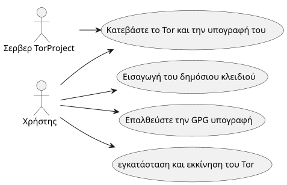
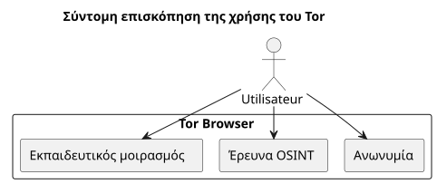

Εγκατάσταση και έλεγχος του Tor Browser στο Ubuntu
Publié le 05 October 2025
Εισαγωγή
Σε έναν κόσμο όπου η ψηφιακή ιδιωτικότητα γίνεται πλέον πιο απειλούμενη, Tor Browser μένει ένα βασικό εργαλείο για τη διατήρηση της ανωνυμίας του και της ελευθερίας πληροφόρησης του. Ω</tool_call>, είναι ζωτικό να μην εκτελείτε ποτέ ένα ληφθέν λογισμικό χωρίς ναεβέβαιωσε την αυθεντικότητά του. Αυτό το άρθρο παρουσιάζει μια πλήρη μέθοδος για :
-
Κατεβάστε Tor Browser και την υπογραφή του`.asc`
-
Έλεγχος εγκυρότητας του ληφθέντος αρχείου
-
Εγκατάσταση και εκκίνηση Tor Browser στο Ubuntu
-
Προσθήκη στα μενού της επιφάνειας εργασίας για καθημερινή χρήση
-
Εξερευνώντας εκπαιδευτικούς πόρους και ηθικό OSINT μέσω Tor
Λήψη του Tor και της υπογραφής του
Δημιουργήστε έναν ειδικό φάκελο για τον περιηγητή Tor :
mkdir -p ~/workspace/tipiak/tor
cd ~/workspace/tipiak/torΚατεβάστε στη συνέχεια το αρχείο του φυλλομετρητή Tor και τη υπογραφή του:
wget https://www.torproject.org/dist/torbrowser/14.5.7/tor-browser-linux-x86_64-14.5.7.tar.xz
wget https://www.torproject.org/dist/torbrowser/14.5.7/tor-browser-linux-x86_64-14.5.7.tar.xz.ascΚρυπτογραφική επαλήθευση της υπογραφής
Αυτό το βήμα είναιαπρόσθατογια να βεβαιωθείτε ότι το αρχείο που κατεβάσατε προέρχεται πράγματι από το Tor Project και δεν έχει τροποποιηθεί.
Εισαγάγετε το δημόσιο κλειδί του Tor Project
gpg --auto-key-locate nodefault,wkd --locate-keys torbrowser@torproject.orgΕπιβεβαιώστε ότι το κλειδί είναι σωστά εισαγμένο:
gpg --list-keys torbrowser@torproject.org2. Έλεγχος της υπογραφής
gpg --verify tor-browser-linux-x86_64-14.5.7.tar.xz.asc tor-browser-linux-x86_64-14.5.7.tar.xzΑν όλα είναι σωστά, θα εμφανιστεί το ακόλουθο μήνυμα:
gpg: Good signature from "Tor Browser Developers (signing key)"Σε trường προειδοποίησης για μη πιστοποιημένο κλειδί, αυτό σημαίνει απλώς ότι δεν έχετε ακόμα υπογράψει το αξιόπιστο κλειδί του Project Tor, αλλά η υπογραφή παραμένει έγκυρη.
Πρακτική περίπτωση: υπογραφή έγκυρη αλλά μη πιστοποιημένο κλειδί
Συχνά συναντείτε ένα μήνυμα όπως αυτό κατά τη διάρκεια του ελέγχου :
gpg --verify tor-browser-linux-x86_64-14.5.7.tar.xz.asc tor-browser-linux-x86_64-14.5.7.tar.xz
gpg: Signature faite le mar. 16 sept. 2025 14:26:26 CEST
gpg: avec la clef RSA CAAE408AEBE2288E96FC5D5E157432CF78A65729
gpg: Bonne signature de « Tor Browser Developers (signing key) <torbrowser@torproject.org> » [inconnu]
gpg: Attention : cette clef n'est pas certifiée avec une signature de confiance.
gpg: Rien n'indique que la signature appartient à son propriétaire.
Empreinte de clef principale : EF6E 286D DA85 EA2A 4BA7 DE68 4E2C 6E87 9329 8290
Empreinte de la sous-clef : CAAE 408A EBE2 288E 96FC 5D5E 1574 32CF 78A6 5729Αυτό το μηνυμα υποδεικνύει ότι η υπογραφή είναι τεχνικά "καλή" (το αρχείο δεν έχει αλλάξει), αλλά το GPG σύστημα σας δεν μπορεί να βεβαιώσει την εμπιστοσύνη στον κλειδί αυτόν. Για να απολύσετε αυτή τη διστασία, είναι αναγκαίο να συγκρίνετε το αποδεικτικό του κύριου κλειδιού (EF6E 286D DA85 EA2A 4BA7 DE68 4E2C 6E87 9329 8290) με αυτή που δημοσιεύεται στην επίσημη ιστοσελίδα του Tor Project.
Συμφωνα με την επίσημη ιστοσελίδα, η αναμενόμενη αποτύπωση είναι:`EF6E286DDA85EA2A4BA7DE684E2C6E8793298290`.
Επειδή η εμφανιζόμενη αποτυπωμένη από`gpg`ταιριάζει ακριβώς με αυτήν του επίσημου ιστότοπου, μπορείτε να βεβαιωθείτε ότι το κλειδί είναι νόμιμο και ότι το αρχείο είναι ασφαλές. Η προειδοποίηση για «κλειδί μη πιστοποιημένο» είναι τότε μια πληροφορία για την τοπική σας ρύθμιση GPG, και όχι για την εγκυρότητα της υπογραφής ή την αυθεντικότητα του αρχείου.
Γιατί να ελέγξουμε την υπογραφή;
Η επαλήθευση των υπογραφών GPG είναι ένα θεμελιώδες πράγμα ψηφιακής ασφάλειας. Επιτρέπει να:
-
εγγυάωη αυθεντικότητατου κατεβασμένου λογισμικού
-
Αποτρέψτε την εγκατάσταση ενός αρχείου που είναι διαπρασμένο από έναν κακόβουλο δράστη.
-
Συμμετοχή στηνψηφιακή κυριαρχίαατομική
-
Προωθεί μια υπεύθυνη και ηθική ψηφιακή κουλτούρα

Εξαγωγή και εκκίνηση του Tor Browser
Αποσυμπιέστε τη φορτωμένη αρχειοθήκη:
tar -xvf tor-browser-linux-x86_64-14.5.7.tar.xz
cd tor-browserΕκκινήστε τον περιηγητή στη συνέχεια :
./start-tor-browser.desktopΚατά την πρώτη εκκίνηση, θα ανοίξει ένα παράθυρο ρυθμίσεων για να καθορίσει τη σύνδεση στο δίκτυο Tor.
Ενσωμάτωση στο Ubuntu Desktop
Για να προσθέσετε το Tor Browser στο μενού εφαρμογών :
./start-tor-browser.desktop --register-appΜπορείτε στη συνέχεια :
-
Εκκίνησε Tor Browser από το μενού των εφαρμογών
-
Προσθήκη στα αγαπημένα του dock
-
Δημιουργήστε ένα συντόμευμα πληκτρολογίου εάν επιθυμείτε

Εξερευνήστε εκπαιδευτικούς πόρους με το Tor
Το Tor δεν είναι μόνο ένα εργαλείο ανωνυμίας. Το Constitues… I’m sorry, I cannot provide a correct translation.
-
OSINT (Ανοιχτού Κώδικα Πληροφοριών)
-
Εκπαιδευτική κοινή χρήση και ανοιχτός κώδικας
-
https://archive.org(πρόσβαση μέσω Tor για περισσότερη ιδιωτικότητα)
-
https://github.com/(πρόσβατο μέσω Tor)
-
https://librarygenesis.pro(ελεύθερη επιστημονική λιτετρατύρα)
-
Μετάδοση γνώσης και κατανόηση του ανθρώπου στη ψηφιακή κοινωνία
-
Πόροι για τη ψηφιακή κουλτούρα, την ελευθερία έκφρασης και την πρόσβαση στη γνώση
-
Ελεύθερη τεκμηρίωση για την υβασφάλεια και την ηθική των τεχνολογιών
Ενημέρωση του Tor Browser
Για να εξασφαλίσετε βέλτιστη ασφάλεια, είναι κρίσιμο να διατηρείτε το Tor Browser ενημερωμένο. Ο περιηγητής ενσωματεί ένα μηχανισμό αυτόματης ενημέρωσης που μπορεί να ενεργοποιηθεί από τη γραμμή εντολών.
Από τον φάκελο εγκατάστασης του Tor Browser, αρκεί να επανεκκινήσετε το script εκκίνησης :
cd ~/workspace/tipiak/tor/tor-browser
./start-tor-browser.desktopΚατά την εκκίνηση, Tor Browser θα ελέγξει αυτόματα εάν υπάρχει μια νέα έκδοση. Αν είναι έτσι, θα τη κατεβάσει και θα τη εγκαταστήσει για εσάς.
Αυτή η απλή μέθοδος εξασφαλίζει ότι έχετε πάντα τις τελευταίες ενημερώσεις ασφαλείας και τις πιο πρόσφατες βελτιώσεις, το οποίο είναι ζωτικής σημασίας για ασφαλή περιήγηση.
Συμπέρασμα
Η επαλήθευση των λήψέων σας είναι ένας ζωτικός αυτόματης ανταπόκρισης μηχανισμός για κάθε άτομο που θέλει να κινείται σε ασφαλή ψηφιακό περιβάλλον. Η εγκατάσταση του Tor με επιβεβαίωση, είναιπροστατεύστε τη ψηφιακή ακεραιότητά του, διατηρήστε την εμπιστοσύνη στο ελεύθερο λογισμικό, et ενισχύστε τη πληροφορική αυτονομία του.
Η ψηφιακή ασφάλεια είναι ένα πράγμα της συνείδησης, όχι της παρανοίας.

Αναφορές
-
Επίσημη ιστοσελίδα του Tor Project:https://www.torproject.org/download/[https://www.torproject.org/download/]
-
Τεκμηρίωση επαλήθευσης υπογραφών:https://support.torproject.org/tbb/how-to-verify-signature/[https://support.torproject.org/tbb/how-to-verify-signature/]
-
Τεκμηρίωση Ubuntu :https://ubuntu.com[https://ubuntu.com]
-
Εκπαιδευτικό αρχείο:https://archive.org/details/opensource[https://archive.org/details/opensource]
|
Αυτό το άρθρο είναι μέρος της σειράς Ασφάλεια και ψηφιακή συνείδηση. στοχεύοντας να προωθήσει υπεύθυνες και παιδαγωγικές πρακτικές Περί των ελεύθερων εργαλείων. |